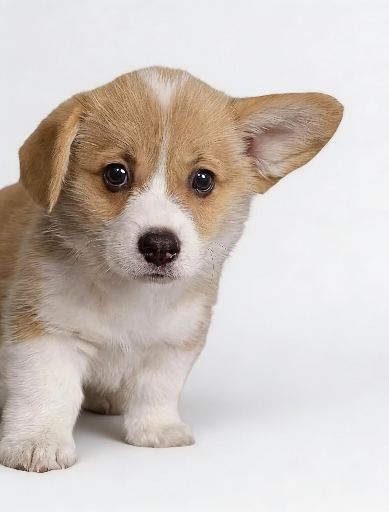
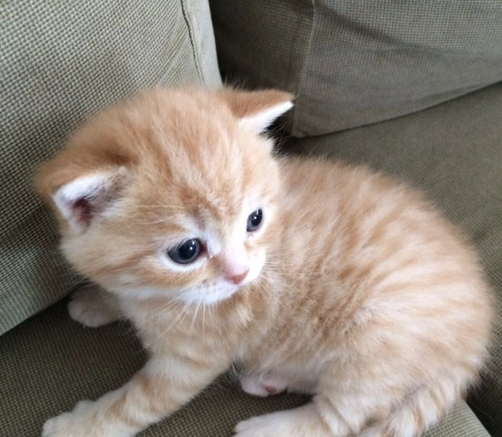
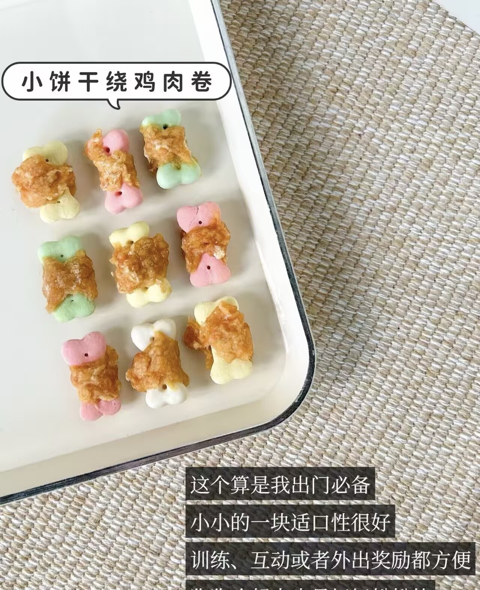
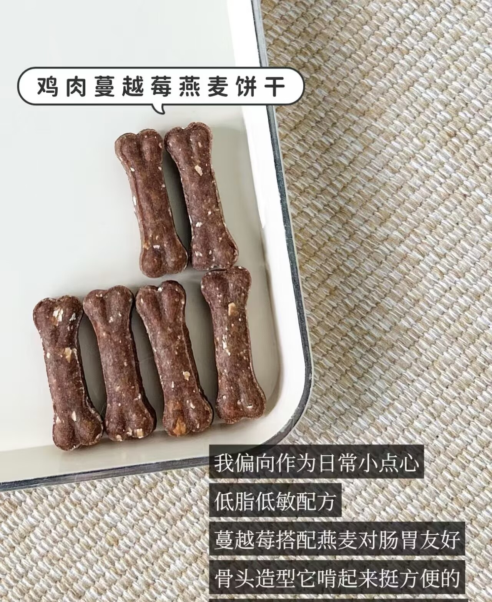
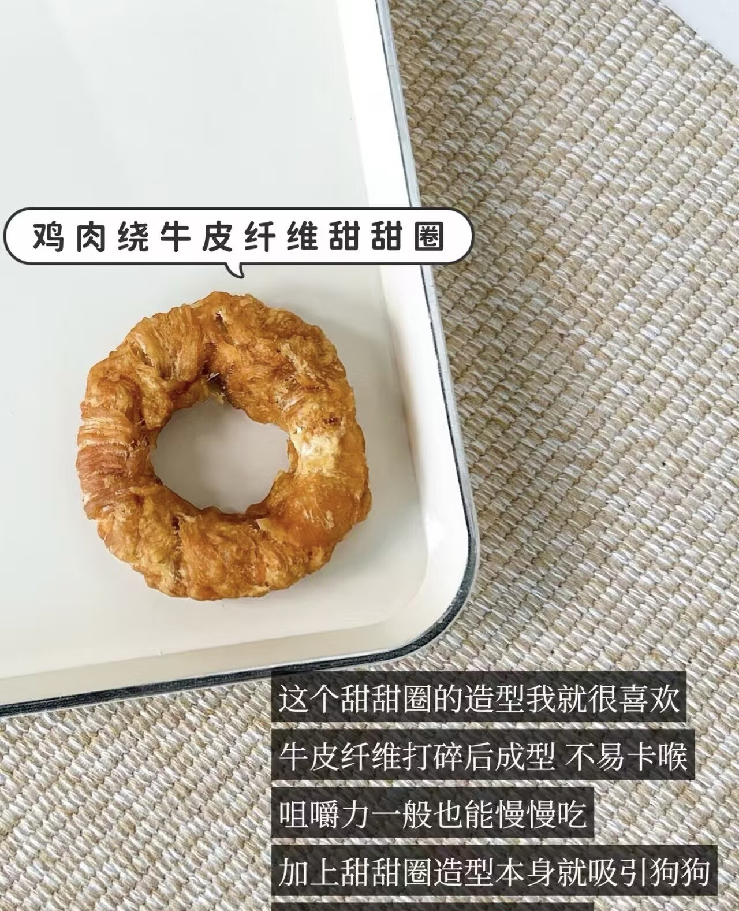

热门话题
- 1 #夏季宠物防暑指南#
- 2 #新手养猫必看#
- 3 #狗狗训练小技巧#
- 4 #自制宠物零食#
- 5 #宠物行为解读#

排序：
综合讨论
本文详细介绍新手养宠需要注意的各个方面，包括饮食、健康、训练、日常护理等，帮助新手快速掌握科学养宠的基本知识和技巧...
12.5k
328
896
狗狗专区
分享我家金毛3个月的训练过程，从一开始的拆家、乱叫，到现在听话懂事，总结了一些实用的训练方法和心得...
3.8k
86
245
猫咪为什么总喜欢踩奶？终于找到答案了
猫咪专区
很多铲屎官都发现自家猫咪喜欢踩奶，这到底是什么原因？本文从猫咪的行为学角度详细解析踩奶的各种原因和含义...
5.2k
128
368

自制无添加宠物零食，健康又放心
养宠经验
分享几款简单易做的宠物零食配方，无添加、无防腐剂，材料常见，做法简单，家里的毛孩子超爱吃...
4.1k
96
289


